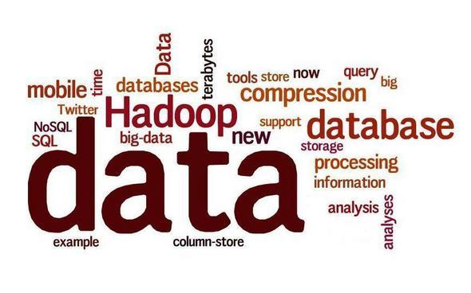
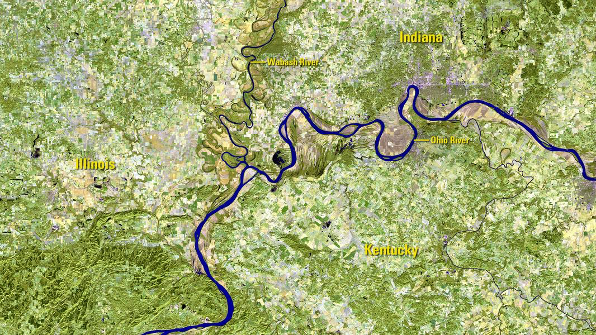
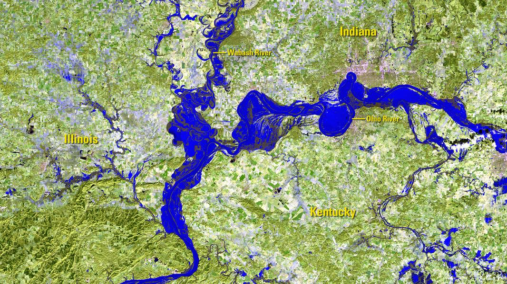
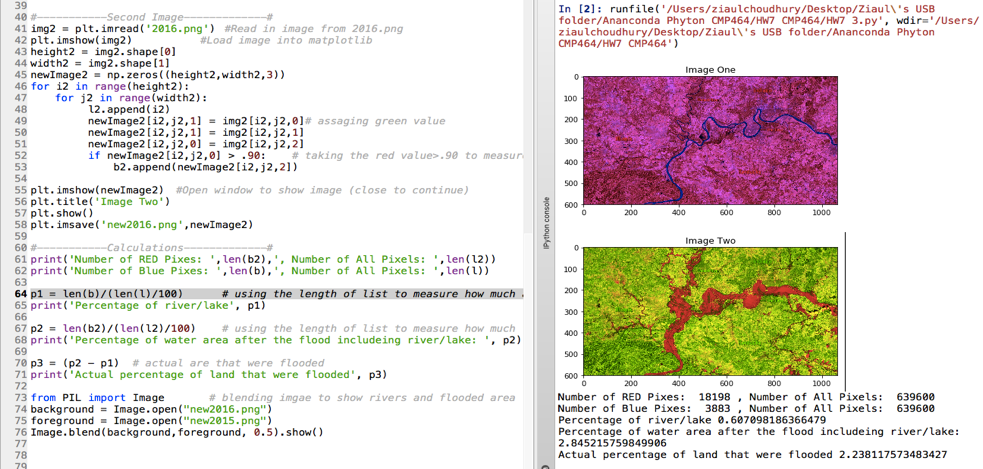

“If you would convince a man that he does wrong, do right. But do not care to convince him. Men will believe what they see. Let them see.”
― Henry David Thoreau

In this example, I will try to demonstrate processing image data in Python IDE and find some analyticities from it. This demo was built and tested on Anaconda Navigator -> Spyder -> Python 3.x compilier. This code is also expeceted to run on any Python 3.x compilier with having instralled the modules needed to run this code accordnigly. Please note that the example is for demo purpose only, it doesn’t assure accuracy.
So, our goal is to compare two satellite images of the same lactation provided by The United States Geological Survey(USGS). The first image given to us is the image that was before flooding and the second image was given to us is after flooding. Let’s name first as the 2015.png and second image as the 2016.png.

2015.png

2016.png
Now, we’ll load both of those images using Python IDE for our analysis to find how much of the area has been flooded by excluding water and lakes shown in the first image. The code will basically turn all those green pixels in the first image (2015.png) into red and count how many pixels are in red or in other words assigning the red value to green pixels. Also, it is taking the blue value>.90 to measure the water. For the second image(2016.png) it assigning the green value which will also turn all the blue pixels into the red.

result.png
What’s more… our reliance on data is becoming a more common factor in our lives. Any social media that we use is data. Most of the research that we do are based on data. The growth of the business can be based on data. Historical data is helping us look back in past and move forward to future. For example, the evaluation of the automobile, weather data, and etc.
Number of RED Pixels: 18198, Number of All Pixels: 639600
Number of Blue Pixels: 3883, Number of All Pixels: 639600
Percentage of river/lake 0.607098186366479%
Percentage of water area after the flood including river/lake: 2.845215759849906%
Actual percentage of land that were flooded 2.238117573483427%